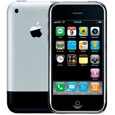
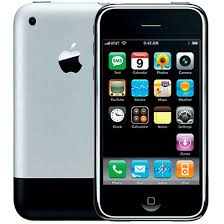

iPhone
iPhone, Apple tarafından tasarlanan ve üretilen multimedya ve internet özelliklerini destekleyen akıllı telefondur. İlk modeli 29 Haziran
2007'de tanıtılmıştır.
iPhone'da dahili kamera, yazılı mesajlaşma ve görsel sesli mesajlar, taşınabilir medya çalar, Safari internet tarayıcısı, e-posta ve
kablosuz internet özellikleri bulunmaktadır. Kullanıcı arayüzü çoklu dokunmatik ekrana uygun olarak fiziksel klavye yerine sanal klavye
özelliği ile birlikte oluşturulmuştur. 3. parti yazılım desteği de bulunduran iPhone, 2008'in ortalarında faaliyete geçen App Store
sayesinde 1.3 milyondan fazla Apple tarafından onaylanmış uygulamayı desteklemektedir.[3] Bu uygulamalar App Store içinde yirmi
farklı türe ayrılarak listelenmektedir.
 
"bas buna"